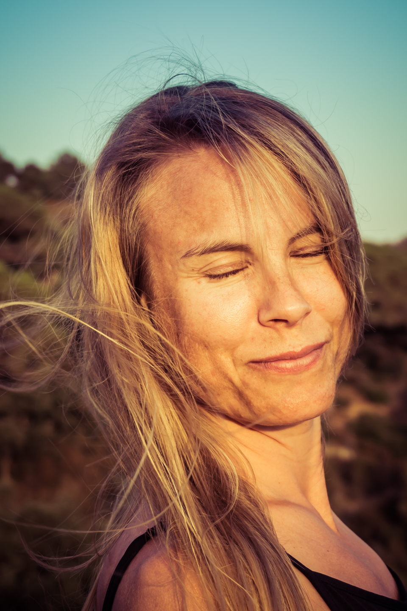

Hanna
A sporty Gothenburger with a past in football and bandy. Has played berimbau in Bahia, tended bar in Barcelona, flipped burgers on Mallorca, rented skis in Andorra, taken a year off in Santiago, studied Italian in Terracina, and owned a house in Bollebygd.